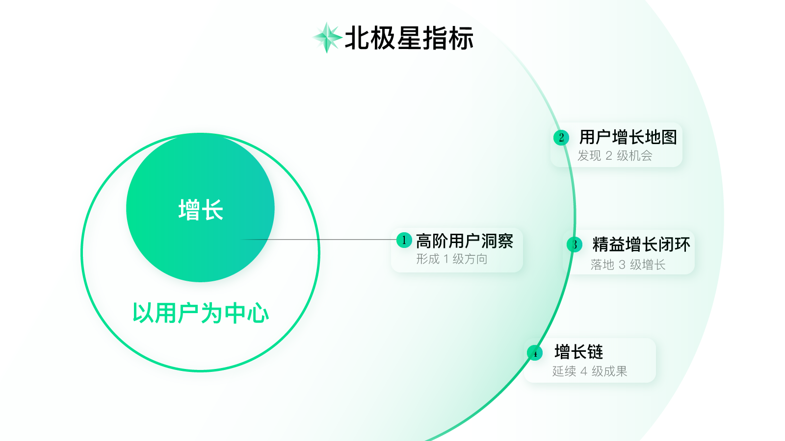
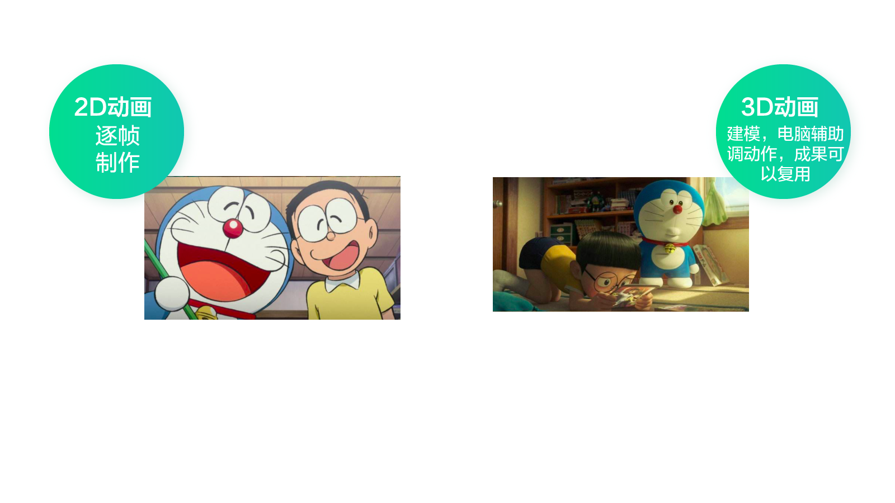
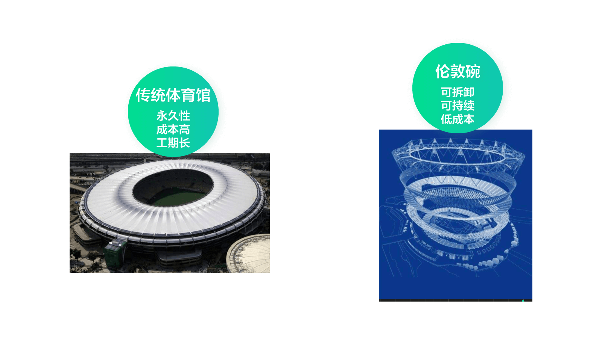
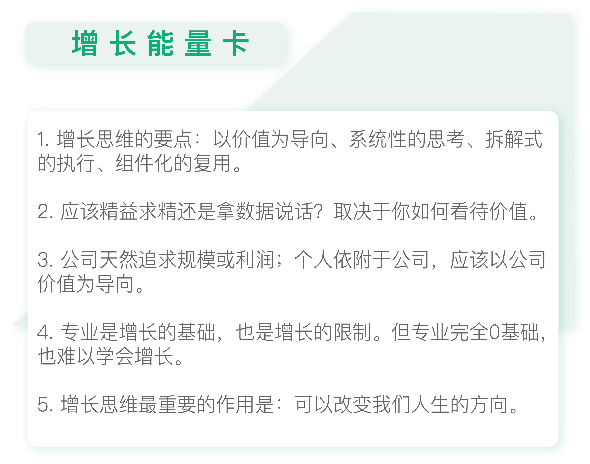

- 00 开篇词 人人都是增长官.md.html
- 01 预习 增长小白如何“弯道超车”？.md.html
- 02 预习 如何理解“增长”？.md.html
- 03 预习 不同职能如何做好增长？.md.html
- 04 预习 做增长如何处理职能间的矛盾？.md.html
- 05 正确目标找不对，天天加班也枉然.md.html
- 06 活学活用北极星指标.md.html
- 07 OKR如何助力增长？.md.html
- 08 不懂用户调研？那就对了！.md.html
- 09 调研目标：在差异性洞察中找到爆破点.md.html
- 10 数据分析：在“花式对比”中发现玄机.md.html
- 11 用户分类：围绕北极星指标细分人群.md.html
- 12 用户访谈：像侦探一样寻找破案线索（上）.md.html
- 13 用户访谈：像侦探一样寻找破案线索（下）.md.html
- 14 提炼用户差异，发现增长契机.md.html
- 15 挖掘产品优势，打破增长瓶颈.md.html
- 16 定位营销差异，抢占用户心智.md.html
- 17 一级方向：找到增长爆破点.md.html
- 18 B端产品如何调研？.md.html
- 19 全局规划增长机会.md.html
- 20 统筹全局的用户增长地图.md.html
- 21 案例解析：定义关键增长指标.md.html
- 22 正负双向洞察，找准切入点.md.html
- 23 二级机会：制定增长策略.md.html
- 24 为一家濒临破产的公司制定增长策略（上）.md.html
- 25 为一家濒临破产的公司制定增长策略（中）.md.html
- 26 为一家濒临破产的公司制定增长策略（下）.md.html
- 27 为什么指标数据怎么优化都不提升？.md.html
- 28 案例解析：打造增长闭环（上）.md.html
- 29 案例解析：打造增长闭环（下）.md.html
- 30 案例解析：唤醒沉睡用户（上）.md.html
- 31 案例解析：唤醒沉睡用户（下）.md.html
- 32 没有分解，就无缘增长.md.html
- 33 四个要点颠覆传统需求文档.md.html
- 34 三级落地：无限场景应用.md.html
- 35 手把手教你设计一次成功的实验（上）.md.html
- 36 手把手教你设计一次成功的实验（下）.md.html
- 37 积少可成多，别针换别墅.md.html
- 38 四级延续：增长组件库案例.md.html
- 39 以用户为中心增长.md.html
- 增长导航图 增长专栏的知识架构是怎样的？.md.html
- 尾声 结束意味着新的开始.md.html
- 预习答疑 你需要一张思维导图吗？.md.html
- 捐赠
39 以用户为中心增长
你好，我是刘津。
我们的课程终于接近尾声了，今天是最后一个模块，也是最后一讲。这一讲其实没有太多新东西要讲，主要是对整个专栏做个收尾和总结。
改变已经骤然发生
就在写专栏的这几个月里，我发现整个行业已经发生了巨大的转变。去年上半年我提出这个理念时，感觉还很“超前”，但现在再看已经要变成主流的观点了。
这让我感到有点惭愧，因为我并没有超前太多。近期不断有公司围绕新的形势调整组织结构、建立增长团队、合并冗余的职能……这个行业确实发展太快了。

越来越多的公司开始强调业务（增长）导向，也就是图中的1级和2级；产品经理和设计师更倾向于执行，也就是图中的3级；并且职能融合的趋势越来越明显，复合型人才开始受到青睐，只有一技之长的人则感到越来越困难。
行业的快速调整让很多人措手不及，与其说今年大环境不好，不如说很多人没有提前做好准备，没有跟上时代的快速变化。
增长是种怎样的思维
不仅仅是互联网，各行各业都在快速增长，也都有着共通的规律。
比如动画业，虽然传统的2D动画给我们留下了非常美好的童年回忆，但是不得不说它已经慢慢淡出了我们的视野。早年迪士尼曾经给了2D动画师很长的时间去学习3D动画技术，但是依然有很多人不愿意接受改变，最后不得不离开。

2D动画和3D动画在实现上是完全不同的：2D动画需要逐帧制作，但3D动画是通过建模再用电脑辅助调整动作，所以模型可以被反复使用，效率很高，也便于展现人物及场景细节。
但无论是2D动画还是3D动画，都需要深刻理解动画规律。所以2D动画师只要稍加学习3D技术，依然是市场抢手的人才。
只可惜，成也萧何，败也萧何。很多人习惯了一种做事方式后，就很难再接受另一种方式。而且迪士尼的动画师如果去其它小一些的动画公司，也能再靠2D手艺维持很多年。他们明知道新的趋势就在眼前，却还是只想着拖延，不去面对，最终被时代抛弃。可见在职场中，空杯心态真的很重要。
说完动画业，再说一个建筑方面的例子。你应该听说过大名鼎鼎的“伦敦碗”，也就是2012年伦敦奥运会的主场馆。和其它奥运会场馆不同，“伦敦碗”采用了一种全新的可拆卸的方式，这样极大的降低了成本，在奥运会结束后拆除下来的部分可以用于其它方面，不会造成浪费。

做出这样的决定是非常不容易的，毕竟奥运会是对一个国家国力的展现，各个国家对此都不惜血本，生怕折了面子。但是奥运会结束后，这些场馆可能就没什么用了，毕竟不是一直都有这么多的观众看比赛，所以建奥运场馆真的是一件挺劳民伤财的事。
但是“伦敦碗”的设计者顶住了压力，运用增长思维，也就是从用户需求出发，用最小成本实现了最大价值。
这里面包含了几个要点，分别是：以价值为导向、系统性的考虑、拆解式的执行、组件化的复用。
界面设计也是一样，传统设计追求工匠精神、精益求精、不惜成本；增长思维注重实验、追求低成本、快节奏。
这让我想到了日本人做寿司，他们可以几十年做同样的事情，务必做到完美。这种不在乎外界干扰，不忘初心的把每一件小事都做到极致的精神，真的非常让人感动。
那么问题来了，我们到底应该充满情怀的把一件事情做到极致，做成艺术品；还是应该点到为止，快节奏的试错，拿数据结果说话呢？
其实，两者都没有错，关键还是那个词：价值！如何看待“价值”，决定了你做事的方式。
如果你是一个企业家，那么大多数情况下，你都是要赚钱，要追求规模或利润的；如果你是一个独立的艺术家，或一个工匠，那么你当然可以追求理想和情怀。
这也是令很多职能工作者，比如设计师、开发纠结的问题：我到底该把界面做的潮流、精致，或者我该成为一个技术大神；还是我应该从公司追求利益的角度出发，通过我的专业能力考虑如何帮公司更上一层楼？
从现在凄凉的大环境看，很明显我们更应该选择后者。毕竟我们不是一个独立的个体，我们依附于某一家公司，公司发展的好，个体才能变得更好。况且目前也别无选择，环境不好，公司招聘也变得非常的理智，不能给公司带来实际价值的，哪怕专业能力再强，也很难被录用。
当然对于增长来说，专业能力是基础。你不可能指望一个毫无工作经验的人立刻就能上手做增长。在国外一般要工作十年以上才有这个资格。也许你增长0基础，但如果你互联网经验0基础，是很难直接学会增长的。
无处不在的增长思维
对于用户增长设计的那套方法，贯穿了本专栏的始终。我一直在想，我应该用什么方式带你复习总结一遍。刚好前几天我又去电影院看了一遍《千与千寻》，我想不如就用这个电影的情节为你串一遍具体方法吧，一定会帮助你更好的理解。
在电影里，每一个来到油屋的人都会忘记自己是谁，要不然就是好吃懒做等着被屠宰，或者换个时髦的说法，你要么努力干活；要么等着被割韭菜。
那么如何脱离这个看似无解的困境呢？
首先，你要有一个清晰的目标（北极星指标），比如“在这里好好生存下去，找机会救爸爸妈妈回家”。正是这种信念，支撑着主人公千寻再苦再难也要走下去。
其次，你要做到足够差异化（通过差异性洞察得到一级方向），这个差异化需要上升到对人性的洞察。油屋里面所有的人都有一个共同的特征：迷失自我。比如千寻父母随意吃别人的东西；白龙为了学法术忘记自己身份；无脸男变得贪婪邪恶；油屋的人唯利是图，为了金子可以不顾一切……只有千寻是最与众不同的，她从始至终保持纯真，不要钱也不要别的，心中只有她的目标。她的这种特质也吸引了很多好心人的帮助，最终得以挽救父母。所以这里的一级方向就是“保持纯真”。
第三，有一张清晰的导航地图（通过用户增长地图得到二级机会）。为了能够救父母，千寻需要几经辗转到汤婆婆那里签约，还要克服自己“笨手笨脚”的毛病，努力做事。这些对一个不到十岁的小女孩来说，挑战实在是太大了。但是为了达成她的目标，她都鼓起勇气一一克服了。
第四，以终为始打造闭环（通过精益闭环落地三级增长）。在导航地图的引导下，千寻完成了一个个闭环，比如“恳求锅炉爷爷收留”“找汤婆婆签约”“给河神洗澡”“拯救白龙”“拯救无脸男”“拯救父母”……她是如何完成这些闭环的呢？其中最重要的假设是“爱和勇气”。
第五，复盘及延展应用（通过增长链延续增长成果）。每一次成功的闭环，都帮助千寻积攒更多的爱和勇气，直至完成终极目标“救爸爸妈妈回家”。在这个过程中，千寻完成了对父母的救赎，也完成了自我的蜕变。
增长思维不仅仅指导我们做事，更能帮助我们在突破常规的过程中创新，甚至引领变革。但这些都不是最重要的，最重要的是，它指引了我们人生的方向。你可以试试看，当你在人生的每一件小事上都融入了增长思维，你的人生将产生怎样的改变。

很舍不得和你说再见，衷心地希望你能把增长思维内化到生活的方方面面，感受它带给你的变化。
欢迎你把自己的思考和疑问通过留言分享出来，与我和其他同学一起讨论。如果你觉得有所收获，也欢迎把文章分享给你的朋友。
© 2019 - 2023 Liangliang Lee. Powered by gin and hexo-theme-book.